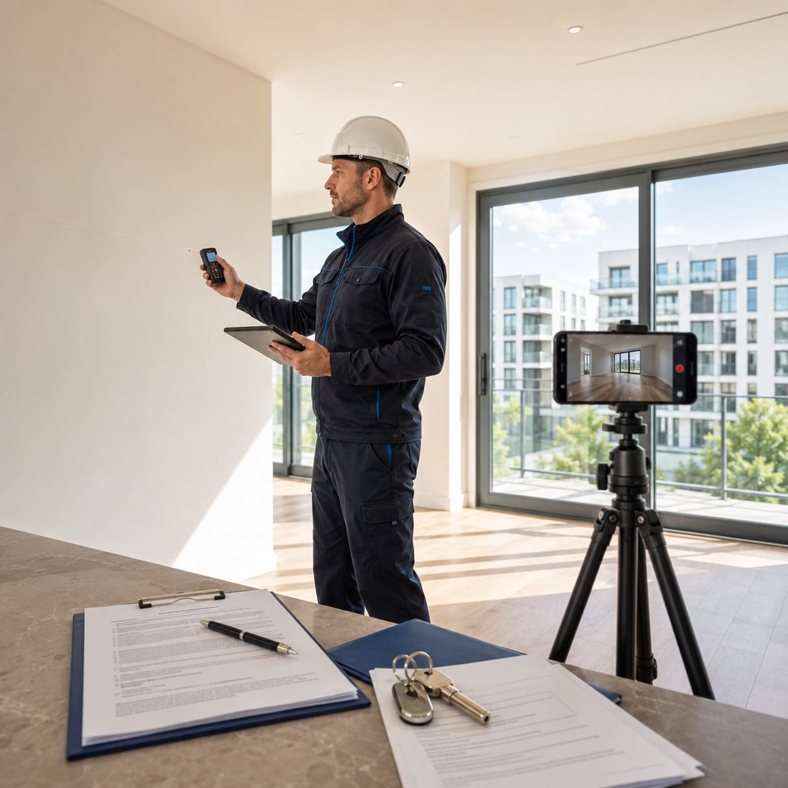
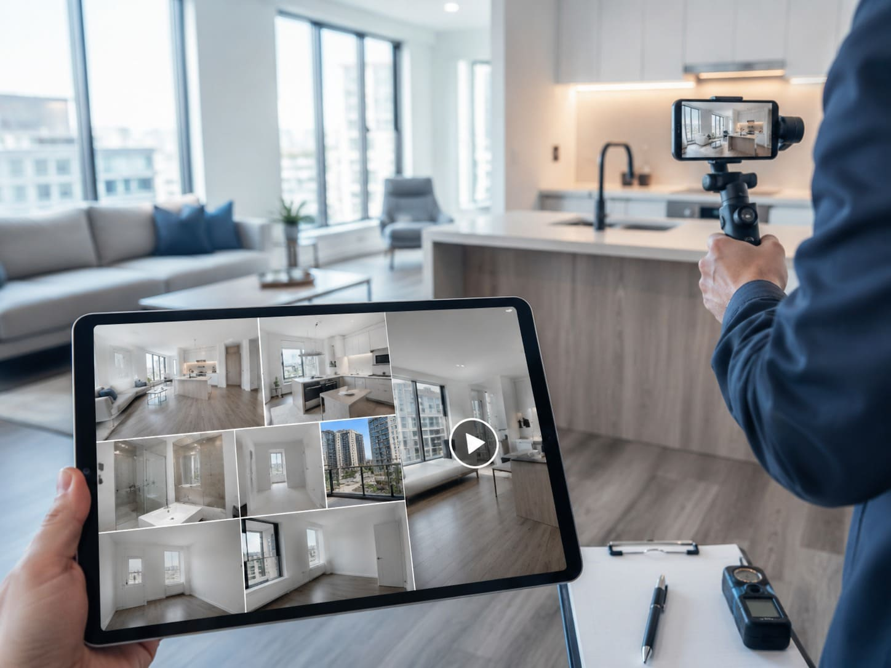
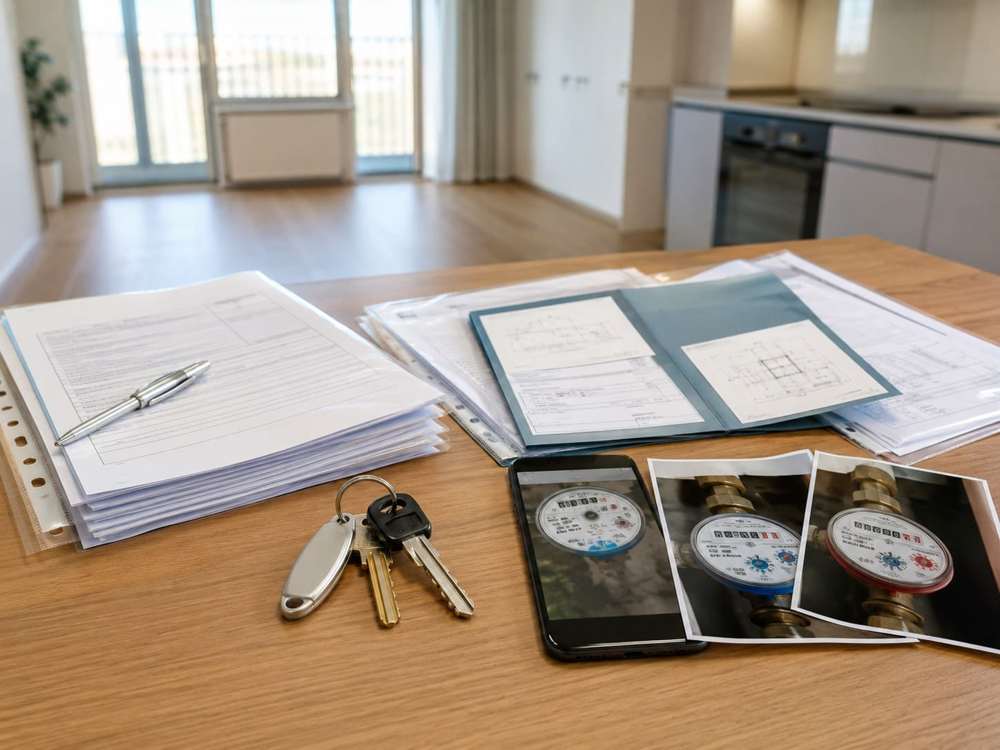

Вы в другом городе или за границей
Не нужно специально приезжать в Москву или МО ради приёмки. Специалист выйдет на объект и проведёт процесс вместо вас.
Когда вы не можете приехать на объект, специалист проведёт базовую приёмку квартиры за вас: проверит квартиру, зафиксирует дефекты, будет на связи, а при необходимости подпишет документы по доверенности, заберёт ключи и выполнит согласованные действия от имени собственника.

Специалист действует по согласованному сценарию: проверяет квартиру, фиксирует замечания, фотографирует документы и счётчики, а после завершения передаёт вам понятный результат.
Дистанционная приёмка добавляется к базовой услуге «Приёмка квартиры». Сначала считается стоимость обычной приёмки по параметрам квартиры, затем добавляется фиксированная доплата за дистанционный формат.
Цена добавляется сверху к стоимости услуги «Приёмка квартиры». Базовый тариф зависит от площади, типа отделки и состава проверки.
Рассчитать итоговую стоимостьУслуга нужна, если собственник не может лично присутствовать на передаче квартиры, но хочет сохранить контроль и получить понятный результат.
Не нужно специально приезжать в Москву или МО ради приёмки. Специалист выйдет на объект и проведёт процесс вместо вас.
Работа, поездка, семья или неудобное время от застройщика — вы делегируете процесс профессионалу.
Если требуется подписать документы, забрать ключи или выполнить действия от имени собственника, заранее согласуем порядок.
Процесс строится так, чтобы собственник понимал, что происходит на объекте, какие дефекты найдены и какие документы оформлены.
Уточняем ЖК, дату, время, площадь, тип отделки, состав базовой приёмки и нужны ли действия по доверенности.
Объясняем, какая доверенность понадобится, если специалист должен подписывать бумаги, забирать ключи или действовать от вашего имени.
Проводит базовую приёмку квартиры, фиксирует дефекты, фотографирует счётчики и документы, а при необходимости закрывает объект после завершения.
Передаём фото, видео, акт осмотра, фотографии документов, показания счётчиков и информацию по ключам и подписанным бумагам.
Дистанционная приёмка усиливает базовую проверку квартиры и добавляет организационные действия, которые обычно требует личное присутствие собственника.
Подробный результат проверки с фиксацией замечаний, чтобы вы понимали состояние квартиры и могли передать замечания застройщику.

Наглядные материалы с объекта: состояние квартиры, найденные дефекты, ход осмотра и визуальное подтверждение результата.

Фотографии документов и счётчиков, а также понятный статус по ключам и подписанным бумагам, если это входило в задачу.
На приёмке важны не только глаза и телефон. Нужны опыт, приборы, понимание дефектов и аккуратность с документами.
Коротко отвечаем на главные вопросы по цене, доверенности, документам, ключам и контролю процесса.
Достаточно оставить минимум данных. Менеджер свяжется с вами, уточнит задачу и рассчитает базовую приёмку плюс дистанционный формат.
Стоимость: базовая приёмка квартиры + 20 000 ₽.